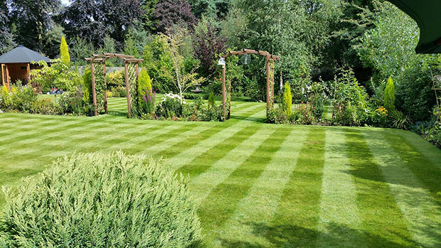

Conseguir un césped perfectamente cortado es más fácil de lo que imaginas.
A continuación te muestro todos los secretos, y los mejores trucos, para que cortar el césped sea coser y cantar.
Contenido
Errores de novato en la siega del césped
Primero los errores:
- Cortarlo demasiado bajo.
- Dejarlo crecer mucho.
- Utilizar una máquina cortacésped poco adecuada para tu jardín.
- Cortar con unas cuchillas romas, dañadas o poco afiladas.
- Realizar el corte con el terreno demasiado seco, o muy húmedo.
¿Cada cuánto se debe cortar el césped?
Para tener una pradera impecable hay que cortar a menudo, así tu césped crecerá más fuerte y sano.
Consejo número 1: evita posponer esta tarea
La frecuencia de corte depende principalmente de la variedad, de la ubicación, del riego y del abonado. No es lo mismo una variedad rústica a base de Festuca Arundinacea (crecimiento lento) que una mezcla ornamental (crecimiento rápido). Como no es lo mismo un césped perfectamente abonado que uno sin abonar.
Recomendaciones generales:
- Primavera: Cada 5 – 10 días.
- Verano: Cada 7 días.
- Otoño: Cada 5 – 10 días.
- Invierno: Dos o tres veces durante en la estación.
En pleno verano el crecimiento del césped se ralentiza
El césped prefiere temperaturas moderadas con alta humedad. Así, crecerá más en una primavera lluviosa y en un otoño suave que en pleno agosto con 38ºC a la sombra.
Como norma general, un césped con la variedad Lolium Perenne como predominante (la mezcla más habitual), debe cortarse como mínimo cada 7 días en las épocas de mayor crecimiento.
¿A qué altura se corta el césped?
La altura de corte en los campos de fútbol es de unos 20 milímetros. Los campos de golf se cortan a solo 2 a 3 milímetros en el green y 8 milímetros en el tee. El error del jardinero amateur es tratar de imitar el corte de estos campos.
Cuanto más bajo cortes el césped mayor será su mantenimiento y dificultad para mantenerlo en perfecto estado.
La altura a la que debes cortar depende del tipo de semilla que hayas sembrado. Algunas plantas admiten cortes de unos pocos milímetros, como Agrostis Stolonífera (variedad de altísimo mantenimiento utilizada en los campos de golf), pero son una excepción.
Las variedades de semillas de las principales marcas (Fito, Compo, Battle…) han mejorado mucho en los últimos años, cada vez admiten cortes más bajos. No obstante, te recomiendo mantener una altura media-alta, entre 3 y 6 centímetros en primavera y otoño. En épocas de mucho estrés para las plantas (verano e invierno), y en zonas de sombra, conviene cortar alto.

Trucos de jardinero profesional
Sigue estos consejos de corte.
Mantén las cuchillas bien afiladas
Es la parte más importante. En todo momento las cuchillas deben estar muy afiladas para asegurar un corte limpio. Comprueba su estado tres veces al año si tu máquina es helicoidal y una vez al año si es rotativa.
Respeta la altura y frecuencia de corte
No dejes crecer el pasto demasiado. Si eliminas el 50% de la hoja, o más, dañarás la planta y eso repercutirá en la calidad de tu césped.
Corta 1/3 de cada vez.
Ejemplo: Tu altura preferida son 4 centímetros, vuelve a cortarlo cuando tenga unos 6 centímeros. ¿Ha crecido a 10 centímetros? Realiza un primer corte a 6 centímetros, deja pasar 3 días y vuelve a cortar a la altura deseada (4 centímetros).
Córtalo con un punto de humedad
¿El césped se corta seco o mojado?
Habrás leído que hay que cortarlo en seco, cuando han pasado 2 o 3 días después del último riego. Pero ningún campo profesional lo hace así, y por supuesto yo tampoco te lo recomiendo.
Lo mejor es cortarlo en las horas posteriores al riego.
Ejemplo: Riegas a primera hora de la mañana un día soleado de primavera o de verano, córtalo a última hora o a la mañana siguiente. En otoño o invierno vigila el punto de humedad, en esta época es mejor cortar a última hora de la tarde para evitar el exceso de humedad.
- No lo cortes con las hojas empapadas.
- No lo dejes secar, el césped sufre con el déficit de agua.
- Córtalo en el punto medio: ni muy seco, ni muy húmedo.
Cambia la dirección del corte
Importante. No cortes siempre en la misma dirección. Acostúmbrate a variar, esto hará que la hierba crezca mejor y más sana, y que el corte sea más limpio.
A lo largo, a lo ancho y en diagonal.
¿Cómo conseguir las rayas de los campos de fútbol?
¿Cómo crees que se consiguen las atractivas rayas o líneas de los campos de fútbol?
- Con pintura.
- Sembrando diferentes variedades de césped.
- Cortando el césped.
- Ninguna de las anteriores
¿Cortando el césped? Pues no. Es la última opción.
Cuando cortas el césped es probable que consigas un efecto parecido, pero nada que ver con las líneas tan marcadas que ves por televisión. ¿Cómo lo hacen en los campos de fútbol? ¿Se pueden conseguir a nivel doméstico?
La explicación es sencilla. En los campos de fútbol primero realizan las tareas de corte y después pasan un rodillo o rulo que peina las hojas de césped en la misma dirección consiguiendo ese efecto y esa imagen tan característica. Ese es el secreto. Algunos campos realizan las dos tareas de una pasada: corte y rulado.
En casa puedes lograrlo pasando un rodillo unos 10 kilogramos, o añadiéndolo en la parte trasera de tu máquina cortacésped. Con este rodillo de Einhell conseguirás esas rayas de los campos de fútbol.
Tan sencillo como eso. Fíjate en los vídeos:
Comentarios
hola buenas noches, corte el cesped muy bajo y se seco, como puedo revivirlo?
Hola Lujan.
Lo puedes salvar. Échale un buen abono de primavera, como este: https://amzn.to/3gujiKf; y riega profundo varios días.
Cuando empiece a crecer córtalo MUY ALTO (de 6 cm para arriba).
Es probable que lo recuperes.
Si quieres dejarlo perfecto, en dos o tres semanas (cuando empiece a recuperar) dale un escarificado para retirar las hojas muertas, aquí te lo explican: https://www.escarificadores.com.
Saludos